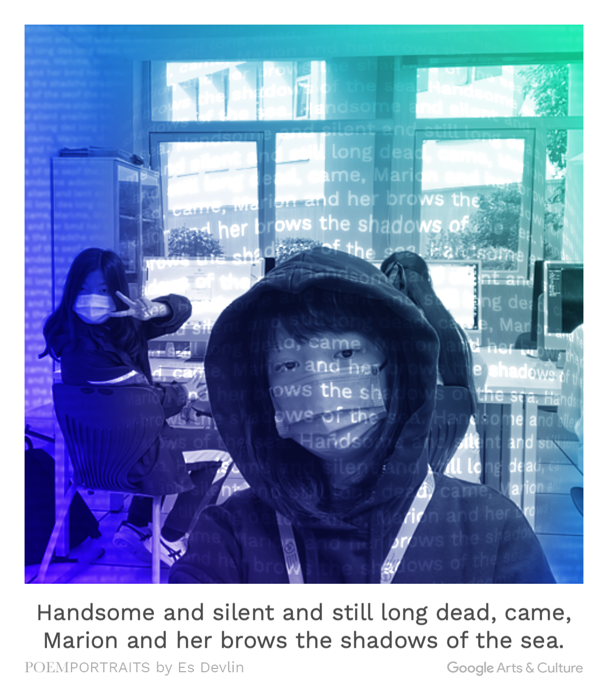

AI writer experiment
这是由AI生成的中文故事

评价：生成的故事情节十分丰富、有趣。但经过不断地实验后发现它生成的故事是通过随机套用模版而不是真正意义上的AI“自主”写作
This is an sentence generated by AI writer
The sentence generated by the was certainly very poetic, but is can only genrate a single sentence, but not a stroy instead.